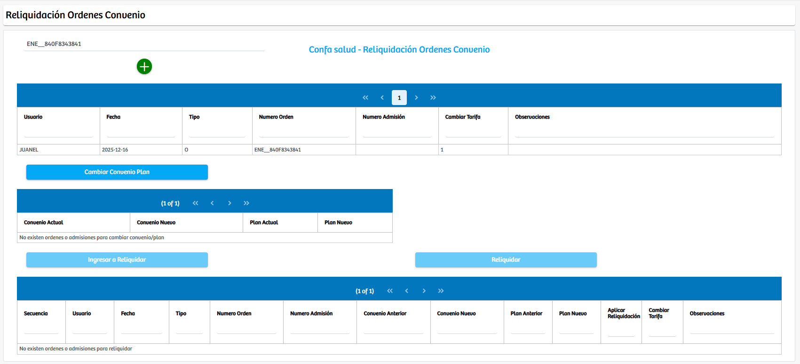
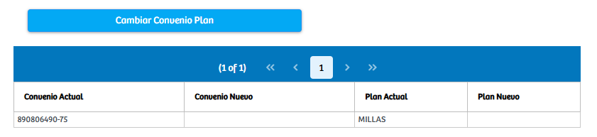
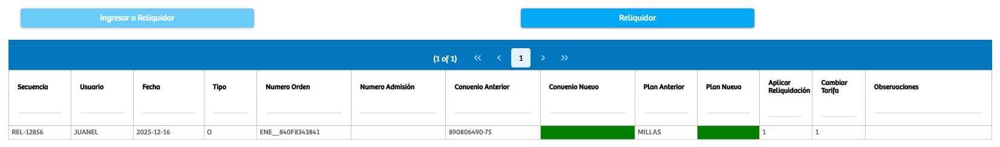
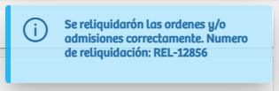

Modulos Sas-Web
Funcionalidades
Reliquidación Ordenes Convenios
El módulo Reliquidación Ordenes Convenios permite gestionar, recalcular y actualizar las condiciones de convenios y planes asociados a una orden específica. Al ingresar a la vista, el sistema presenta un campo de texto en el que el usuario debe digitar el número de orden a consultar. Una vez ingresado, se muestran los registros vinculados a dicha orden, incluyendo información como usuario, fecha, tipo, número de admisión y observaciones. Esta primera tabla funciona como una referencia general del estado actual de la orden antes de iniciar cualquier proceso de reliquidación.
El proceso operativo comienza al seleccionar el botón Cambiar Convenio/Plan, acción que habilita una nueva tabla donde se visualiza el convenio y el plan actualmente asociados a la orden. Esta vista permite confirmar si existe un cambio pendiente o necesario en el convenio o plan del paciente. Una vez que se valida esta información, el sistema habilita el botón Ingresar a Reliquidar, el cual tras ser presionado agrega la orden al cuadro inferior destinado exclusivamente a las órdenes que serán sometidas al proceso de reliquidación.
 En este último panel, la plataforma muestra un resumen detallado que incluye secuencia, usuario, fecha, número de admisión, convenio anterior y nuevo, plan anterior y nuevo, así como indicadores para aplicar la reliquidación o cambiar tarifa. Cuando toda la información coincide correctamente y el usuario confirma la operación, se habilita el botón Reliquidar, que ejecuta el proceso final. Una vez completada la reliquidación, el sistema notifica al usuario mediante un mensaje informativo indicando que las órdenes y/o admisiones fueron reliquidadas exitosamente, proporcionando además el número de reliquidación generado para control y seguimiento.
Este módulo concentra y automatiza las acciones necesarias para modificar condiciones de facturación asociadas a convenios y planes, facilitando el ajuste administrativo de órdenes previamente registradas y asegurando que queden actualizadas según las condiciones vigentes del convenio correspondiente.